S.O.R.N Directive 1 Hero Video (Vertical Slice)
Engine
Unreal Engine 5
Team Size
6 people
Duration
12 weeks
Role
Solo Level Designer


Before iteration 1
Level Goals and Overview
S.O.R.N is a fast-paced, third-person mech shooter set across a monolith scale continent. This first level called "Directive 1" was designed to support strategic combat encounters in a semi open desert and a monlith sized facilitiy, while giving players freedom to move and engage dynamically. The level design goals for this project were to:
- Teach and reinforce core player mechanics through level layout and encounters
- Guide players naturally through interesting and contextualized playspaces
- Design enemy encounters that feel challenging and rewarding
Level Walkthrough
- Goal: Teach players navigation, pacing, and strategic movement in a large open desert while guiding them toward the main objective
- Design action 1: Placed three POIs with the first unmissable, using guarding turrets to naturally draw players into the encounter and reinforce core controls
- Design action 2: Added a giant laser turret and arranged debris fields as mandatory cover to challenge line-of-sight management and promote spatial awareness
Beat 1: The Desert
- Goal: Transition players from open desert navigation to tight, controlled combat encounters
- Design action 1: Introduced the Hermit enemy in a small storage room, allowing a safe first engagement before more complex fights
- Design action 2: Layered enemy placements and set dressing in Sector 1 to encourage tactical movement, provide meaningful cover, and foreshadow future train-based encounters
Beat 2: The Wall Sector 1
- Goal: Introduce verticality and environmental hazards to increase challenge and teach advanced traversal
- Design action 1: Placed bounce pads in a safe area first, then integrated them as a core traversal tool for combat and platforming
- Design action 2: Combined moving train hazards, multi-level enemy placements, and vertical spaces to create a more demanding, multi-layered encounter
Beat 3: The Wall Sector 2
- Goal: Shift pacing and tension with a tighter, more linear section
- Design Action: Use darker lighting, debris, and broken scaffolding to create danger while maintaining traversal paths and cover
- Design Action: Place enemies densely in constricted corridors to encourage precise movement and combat mastery
Beat 4: The Wall Sector 3
The Process
 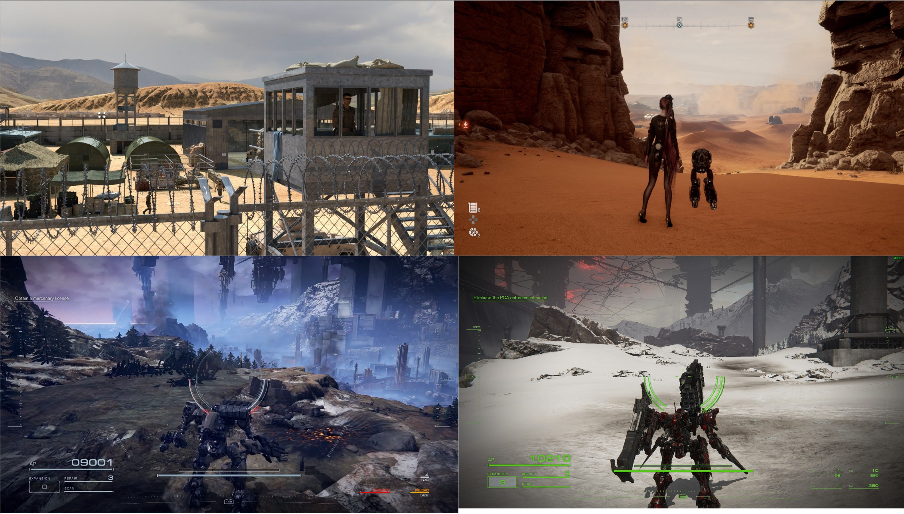
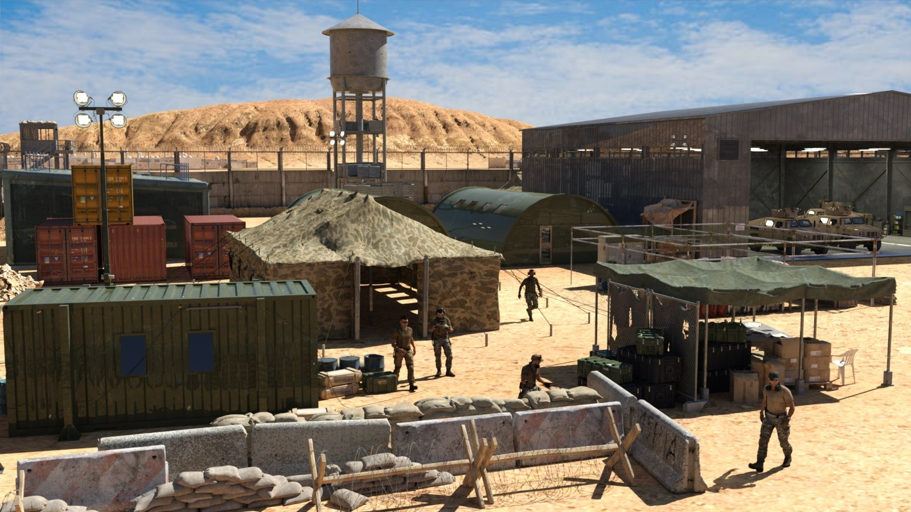
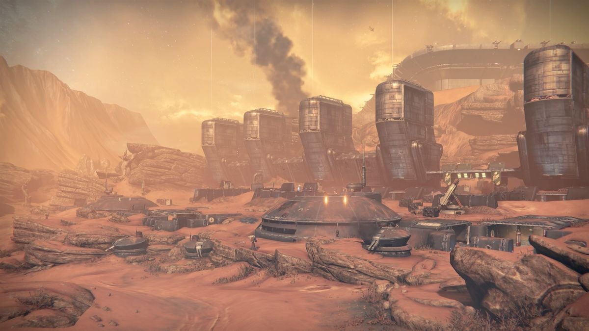
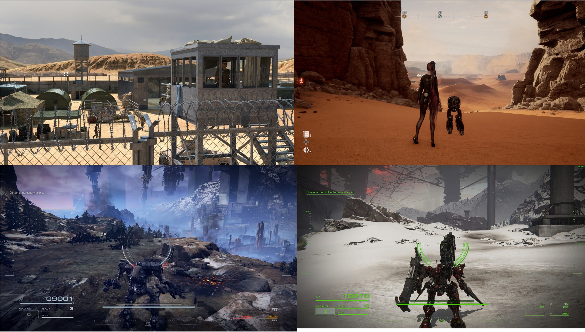
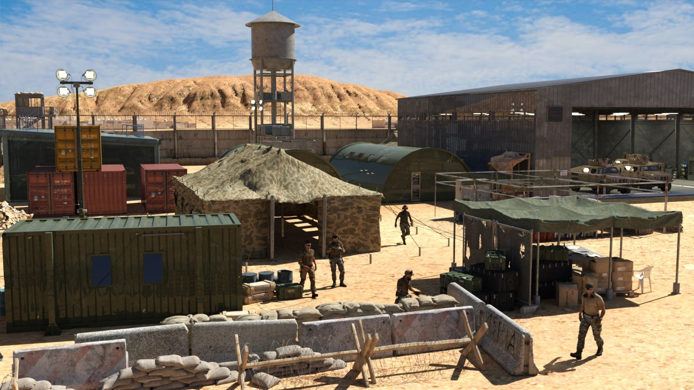
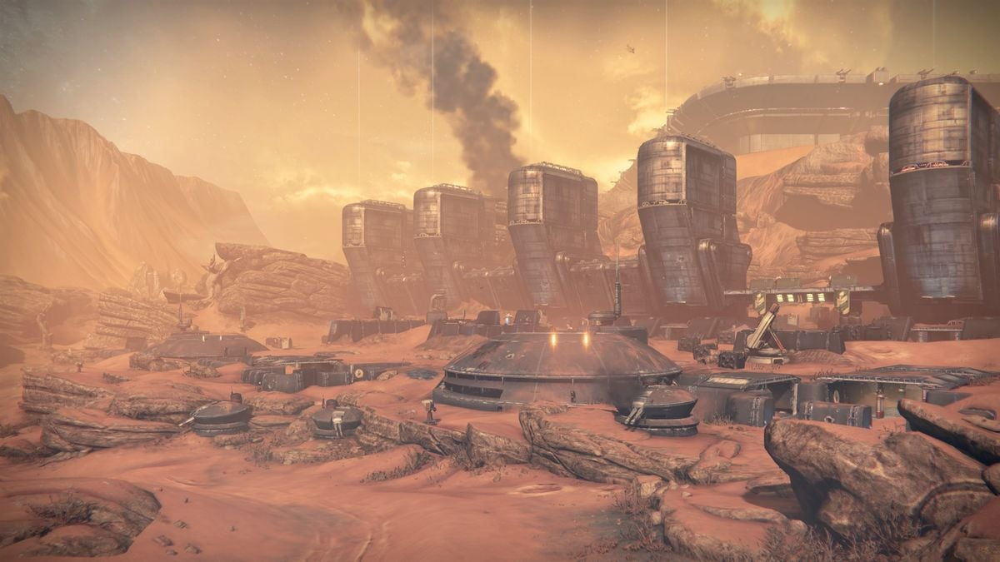
Before iteration 1
Research and References
The process for designing this level involved creating an environment that supported fast-paced mech combat while teaching players core systems. Key steps included:
- Research & Ideation: Studied mech-focused games (e.g., Armored Core) to analyze combat pacing, encounter design, and level flow
- Reference Gathering: Collected visual references, concept art, and gameplay screenshots to inspire environmental design and thematic consistency
- Miro Board Organization: Compiled references and ideas on a Miro board to map layouts, level goals, and design solutions visually
Maps, Layouts, and Documentation
This section highlights the level planning process through maps, layouts, and detailed design documentation. Each entry demonstrates how I structured encounters, guided player movement, and iterated on level flow before building in-engine.
- Created Level Design Documentation: Detailed each encounter and level design decisions to communicate design intent clearly
- Produced Comprehensive Maps: Developed top-down and blockout layouts highlighting key areas, paths, and strategic points
- Multiple Map Iterations: Refined and improved existing maps over time, showing design evolution and enhancements through visual examples
 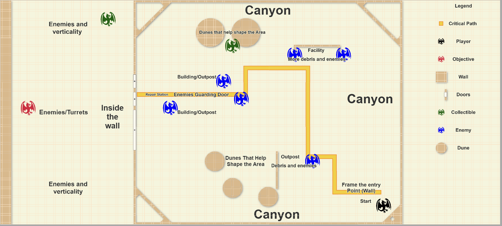
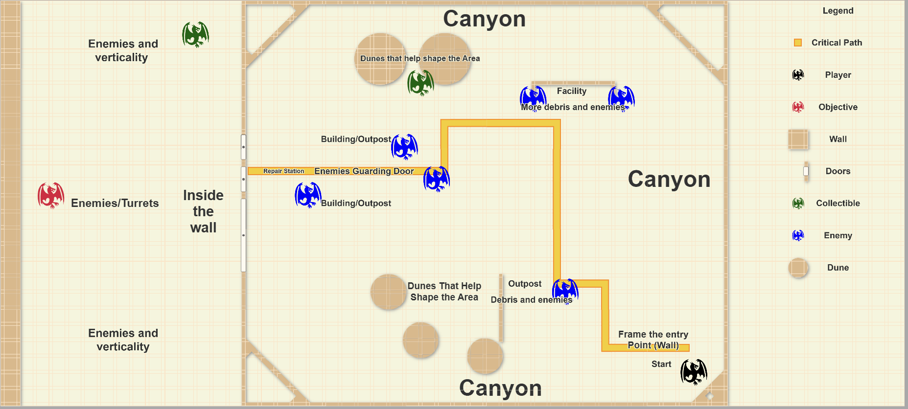


Before iteration 1

 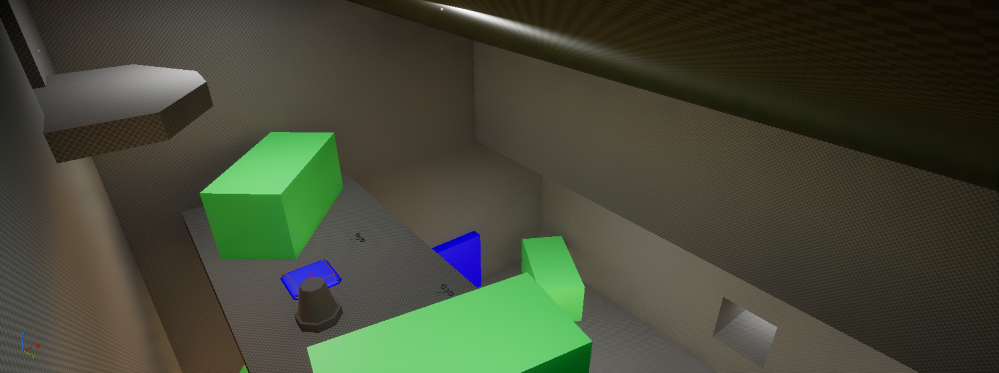
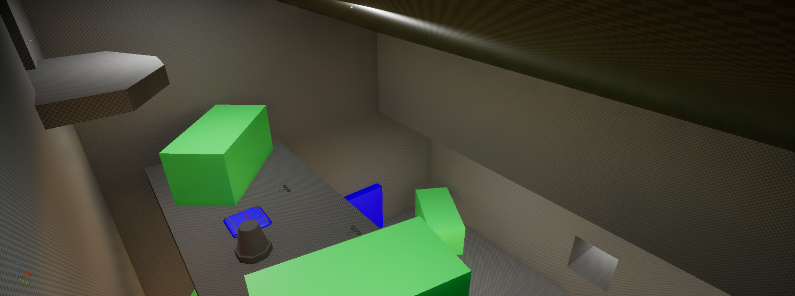

Before iteration 1
Initial Blockout
The initial blockout was designed to support the core mechanics of S.O.R.N, giving players spaces to engage with combat, traversal, and exploration in a way that reinforced gameplay learning. This blockout focused on:
- Supported Player Mechanics: Created blockouts and encounter areas that allowed players to engage with core mech abilities and understand combat pacing.
- Provided Visual and Tactical Clarity: Arranged key environmental features to communicate paths, cover, and combat flow clearly while staying visually consistent with reference material.
- Contextualized Playspaces: Designed level areas that reflected maps, concept art, and research references, ensuring each space felt intentional and meaningful.
Design Challenges and Solutions
Problem 1: Unclear Desert Exploration
- Goal: Create a desert landscape that is vast and intriguing, but still guides the player toward the main objective
- Problem: After the tutorial and desert opening, players faced three unexplained paths with unclear purposes for each POI
- Solution: Increased landscape size immensely. POIs were spread out further, but still visible. Player starting location was adjusted to naturally guide them toward the main path

 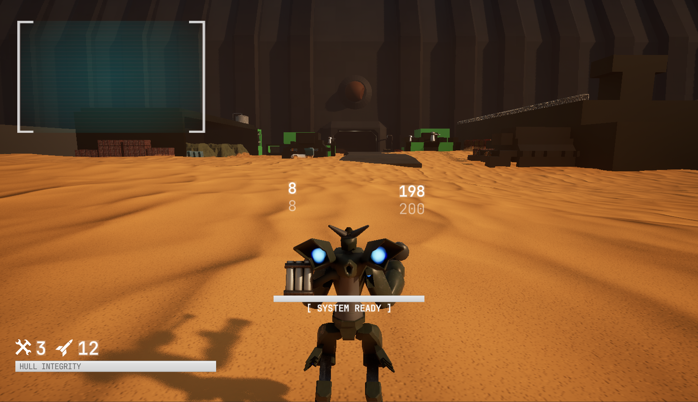
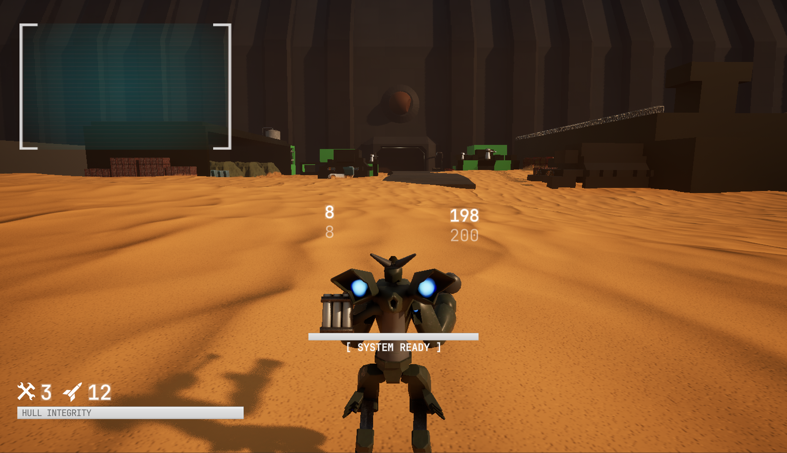

Before iteration 1


Before iteration 1
Problem 2: Platforming Did Not Support Gameplay Flow
- Goal: Goal was to combine platforming and combat, blending traversal with fast-paced gameplay.
- Problem: Platforming while in combat disrupted player flow and made scaling monlith sized levels with jump pads extremly difficult
- Solution: Removed platforming to support design goals and pacing, pivoting to a more linear experience.
Problem 3: Playspaces Were Poorly Contextualized
- Goal: Show that the player must traverse a desert landscape to infiltrate a monolith-scale facility that used bullet trains to transport valuable cargo
- Problem: POIs and sectors lacked identity, leaving their purpose and functionality unclear
- Solution: Redesigned POIs and facility sectors with clear intent, guided by updated reference images and a Miro board


Before iteration 1
Conclusion & Learnings
Developing S.O.R.N’s first level provided a hands-on opportunity to create large-scale 3D environments that balance exploration, combat, and player guidance. Iteration and refinement were key to ensuring pacing, flow, and engagement remained compelling throughout each encounter. Key takeaways include:
Knowledge Gained:
- Gained experience in effectively blocking out levels and using Unreal Engine tools like CubeGrid, landscaping, and foliage
- Designing with purpose, ensuring every prop, encounter, and space reinforces gameplay or narrative
- Communicating level design concepts clearly through maps, diagrams, and reference visuals
Areas for Growth:
- Exploring more creative layouts and prop placement to enhance player experience
- Applying feedback effectively while maintaining a cohesive level design
- Balancing challenge and guidance to better teach player systems through level design